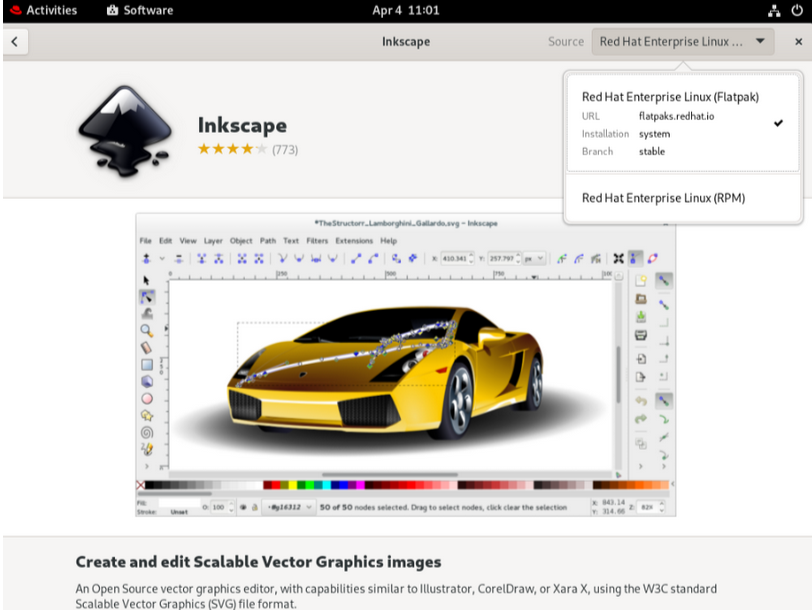

Flatpak usage
Flatpak management can be done either via the command line or the Gnome Software Center (GSC).
-
To search a Flatpak application from the command line, you can run:
$ flatpak search application-name
-
To install a Flatpak application use the
flatpak installcommand.$ flatpak install application-name
-
To install the Libreoffice application from
rhelremote run the following command.$ flatpak search LibreOffice Application ID Version Branch Remotes Description org.libreoffice.LibreOffice stable rhel The LibreOffice productivity suite
$ flatpak install rhel org.libreoffice.LibreOffice
-
-
Gnome Software Center(GSC) also shows the rpm and Flatpak versions of packages (if available).
-
GSC defaults to the Red Hat flatpak remote, but you can manually change it.
-